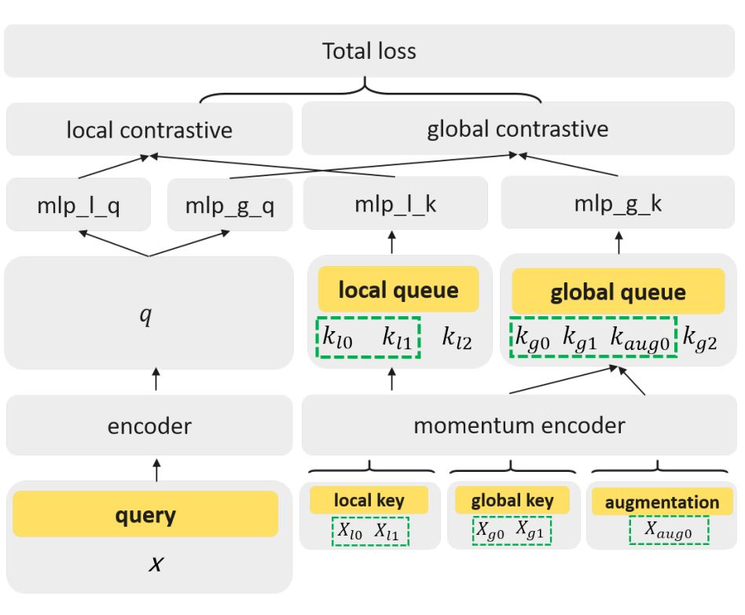
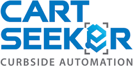

|

|
Fuse Local and Global Semantics in Representation Learning
Yuchi Zhao,
Yuhao Zhou
< arXiv >
FLAGS aims at extract both global and local semantics from images to benefit various downstream tasks. It shows promising results under common linear evaluation protocol. We also conduct detection and segmentation on PASCAL VOC and COCO to show the representations extracted by FLAGS are transferable.
|
|
|
Huawei Technologies Co., Ltd.
Computer Vision Researcher
Duration: Sept. 2020 - Jan. 2021
Researched in self-supervised representation learning and class-agnostic counting, and co-authored the paper about contrastive learning. Mentored by Yuhao Zhou and Dr. Hailin Hu.
|
|
|
Ford Motor Company
Firmware Developer
Duration: May 2021 - Aug. 2021
Developed code for bootloader and BSP on Qualcomm 5G chips used in the telematic control unit (TCU) of vehicles.
|
|
|
Miovision Technologies Inc.
Computer Vision Engineer
Duration: Jan. 2020 - Apr. 2020
Built the fisheye image semantic segmentation system for traffic scene understanding.
|
|

|
Eagle Vision Systems (Acquired by McNeilus)
Deep Learning Engineer
Duration: July 2019 - Jan. 2020
Worked on garbage bins detection and classfication for automating the operation of truck robotic lift arm.
|
Interest
- Positive psychology
- Stamp carving
- Photography
- Clarinet
- Badminton
|
Last updated: August 8th, 2022 by Yuchi(Allan) Zhao
|
{kind=link}